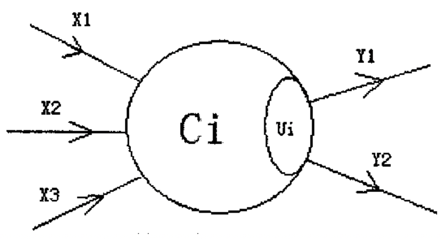
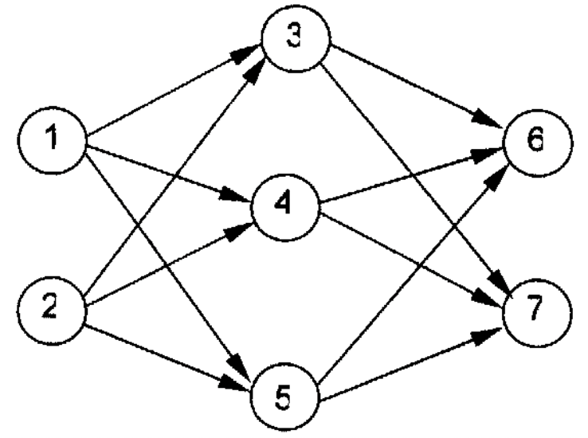

人工神经网络（Artificial Neural Network）是一种新兴的具有自我学习能力的计算系统，在模式识别、函数逼近及贷款风险评估等诸多领域有广泛的应用。对神经网络的研究一直是当今的热门方向，兰兰同学在自学了一本神经网络的入门书籍后，提出了一个简化模型，他希望你能帮助他用程序检验这个神经网络模型的实用性。
在兰兰的模型中，神经网络就是一张有向图，图中的节点称为神经元，而且两个神经元之间至多有一条边相连，下图是一个神经元的例子：

图中，X1 - X3是信息输入渠道，Y1－Y2是信息输出渠道，$C_i$表示神经元目前的状态，$U_i$是阈值，可视为神经元的一个内在参数。
神经元按一定的顺序排列，构成整个神经网络。在兰兰的模型之中，神经网络中的神经元分为几层；称为输入层、输出层，和若干个中间层。每层神经元只向下一层的神经元输出信息，只从上一层神经元接受信息。下图是一个简单的三层神经网络的例子。

兰兰规定，$C_i$ 服从公式：$C_i=\sum_{(j,i) \in E}W_{ji}C_j-U_j$（其中 $n$ 是网络中所有神经元的数目）
公式中的 $W_{ji}$（可能为负值）表示连接 $j$ 号神经元和 $i$ 号神经元的边的权值。当 $C_i$ 大于 0 时，该神经元处于兴奋状态，否则就处于平静状态。当神经元处于兴奋状态时，下一秒它会向其他神经元传送信号，信号的强度为 $C_i$。
如此，在输入层神经元被激发之后，整个网络系统就在信息传输的推动下进行运作。现在，给定一个神经网络，及当前输入层神经元的状态（$C_i$），要求你的程序运算出最后网络输出层的状态。
 Comet OJ
Comet OJ